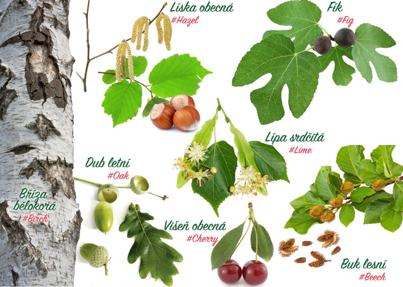

Rozhýbejte stromy v mobilu
Nová aplikace GrowApp vám umožní chytrým telefonem zaznamenat postupné rašení stromů a bylin na zahradě či jinde v přírodě. Aplikace pomáhá opakovaně fotit ten samý strom, a nakonec ze série snímků vytvoří časosběrné video. Tímto způsobem můžeme sledovat změny v přírodě jak v průběhu ročních období, tak i v průběhu let. Nejenže se pozorovatelé baví focením stromů a tvorbou videa, ale pomáhají tím vědcům k tomu, aby lépe pochopili vliv změny klimatu na životní prostředí.
Sledujte sedm druhů stromů
Pro vědecký výzkum je důležité, abyste sledovali a fotografovali následujících 7 druhů stromů. Nové snímky prosím vždy označte příslušným #hashtagem (jména stromu v angličtině). Hashtag vložíte do pole popisu fotografie, než ji nahrajete. Fotografie bez hashtagu je těžké v mapě dohledat, vědci je tudíž nemohou použít pro svůj výzkum. Als je de foto neemt, geef dan ook onderstaande #tag door in het ‘omschrijving’ veld:
- Dub letní (Quercus robur), #oak
- Líska obecná (Corylus avellana), #hazel
- Buk lesní (Fagus sylvatica), #beech
- Bříza bělokorá (Betula pendula), #birch
- Višeň obecná (Prunus cerasus), #cherry
- Lípa srdčitá (Tilia cordata), #lime
- Fik (Ficus carica), #fig
Další informace
Více informací a interaktivní mapu videí naleznete na adrese: www.growapp.todayPro školy
Školy se mohou zapojit také do Fenologické kampaně programu GLOBE.Vývoj aplikace
Tato aplikace byla vyvinuta na základě myšlenky The GLOBE Netherlands Foundation. Technický vývoj aplikace a tvorbu webové stránky zajistili Geodan a Forget the fishKontakt
info@growapp.todayPodpora
Aplikace je financována a podporována konsorciem partnerů:


Technické parametry
- Mapový klient
- OpenLayers 4.0, proj4
- Software mapového serveru
- Mapproxy
- Výchozí mapa
- Openstreetmap, license
- Úprava fotografií a tvorba animace
- GraphicsMagic a GM for nodejs
- Prohlížení fotografií
- Photoswipe
- Další mapové vrstvy
- Nasa worldview
- Vzhled a ikony
- Material Design Lite a Material Design Icons
- Native app framework
- Apache cordova a Android SDK a community camera plugin
- Databáze
- Postgres a PostGIS
- Custom Server
- NodeJs
- Logo
- Vytvořeno na základě tohoto designu